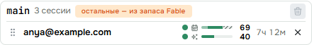
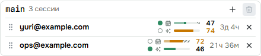

<title>Два запаса недели</title>
<meta name="claude:viewport-fit-sides" content="cover">
<link rel="stylesheet" href="https://fonts.googleapis.com/css2?family=Inter:wght@400;500;600&family=Space+Grotesk:wght@500;600&family=JetBrains+Mono:wght@400;500&display=swap">
<style>
/* раскладка: неделя одного аккаунта → очередь из аккаунтов с двумя местами → кто кого просит → крайние случаи → доказательства и проверка */
:root {
  --bg: #f6f5f1; --card: #ffffff; --fg: #1c211f; --muted: #66706b; --line: #d9d8d0; --soft: #eceae3;
  --accent: #1f7a63; --accent-soft: #dcefe8; --fable: #6b4bc4; --fable-soft: #e9e2fa; --new: #b8590f; --new-soft: #fbe9d7; --bad: #b3362b; --bad-soft: #f7e1de; --code: #f0eee7;
}
@media (prefers-color-scheme: dark) { :root:not([data-theme="light"]) {
  --bg: #151917; --card: #1d2320; --fg: #e8ece9; --muted: #98a39d; --line: #343c38; --soft: #252c28;
  --accent: #5fc3a6; --accent-soft: #1d3a31; --fable: #a48cf0; --fable-soft: #2c2547; --new: #f0a25c; --new-soft: #40291a; --bad: #ef8a80; --bad-soft: #43221f; --code: #232a26; color-scheme: dark } }
:root[data-theme="dark"] {
  --bg: #151917; --card: #1d2320; --fg: #e8ece9; --muted: #98a39d; --line: #343c38; --soft: #252c28;
  --accent: #5fc3a6; --accent-soft: #1d3a31; --fable: #a48cf0; --fable-soft: #2c2547; --new: #f0a25c; --new-soft: #40291a; --bad: #ef8a80; --bad-soft: #43221f; --code: #232a26; color-scheme: dark }
body { background: var(--bg); color: var(--fg); font: 15px/1.5 Inter, system-ui, sans-serif; padding-left: max(16px, env(safe-area-inset-left, 0px)); padding-right: max(16px, env(safe-area-inset-right, 0px)); padding-block: 28px 64px; }
main { max-width: 1040px; margin: 0 auto; display: flex; flex-direction: column; gap: 36px; }
h1, h2 { font-family: "Space Grotesk", Inter, sans-serif; text-wrap: balance; margin: 0; }
h1 { font-size: 34px; line-height: 1.1; }
h2 { font-size: 21px; }
.lead { color: var(--muted); max-width: 66ch; margin: 8px 0 0; }
section { display: flex; flex-direction: column; gap: 14px; border-radius: 14px; }
section.read > h2::after { content: " ✓ прочитал"; font: 500 12px Inter, sans-serif; color: var(--accent); }
.card { background: var(--card); border: 1px solid var(--line); border-radius: 14px; padding: 16px; min-width: 0; }
.chg { background: #fff3a8; color: #1c211f; border-radius: 4px; padding: 0 4px; }
button { font: 500 13px Inter, sans-serif; color: var(--fg); background: var(--soft); border: 1px solid var(--line); border-radius: 999px; padding: 6px 12px; cursor: pointer; }
button.on { background: var(--accent-soft); border-color: var(--accent); }
button:disabled { opacity: .45; cursor: default; }
button:focus-visible, input[type=range]:focus-visible, [data-i]:focus-visible { outline: 2px solid var(--accent); outline-offset: 2px; }
.btns { display: flex; gap: 8px; flex-wrap: wrap; }
.stack { display: flex; flex-direction: column; gap: 14px; }

/* аккаунт: неделя в два тона со штрихом запаса и лимит Fable — как на странице Claude */
.q { display: flex; flex-direction: column; gap: 10px; }
.acc { display: grid; grid-template-columns: auto minmax(0, 1fr); gap: 4px 12px; align-items: center; }
.acc .nm { font: 600 13px "Space Grotesk", sans-serif; color: var(--muted); white-space: nowrap; display: flex; gap: 6px; align-items: center; }
.acc .rs { font: 400 11.5px Inter, sans-serif; color: var(--muted); }
.acc .tag { font: 500 10.5px Inter, sans-serif; color: var(--bad); background: var(--bad-soft); border-radius: 4px; padding: 0 5px; }
.bars { display: flex; flex-direction: column; gap: 4px; min-width: 0; }
.br { display: grid; grid-template-columns: 14px minmax(0, 1fr) 2.4em; gap: 8px; align-items: center; }
.br b { font: 600 13px "Space Grotesk", sans-serif; text-align: right; font-variant-numeric: tabular-nums; }
.wk, .fb { display: flex; height: 12px; border-radius: 6px; overflow: hidden; background: var(--soft); border: 1px solid var(--line); }
.wk i, .fb i { display: block; height: 100%; flex: none; }
.wk .f { background: var(--fable); opacity: .55; }
.wk .o { background: var(--accent); }
.wk .sp { flex: 1 1 0; }
.wk .h { background: repeating-linear-gradient(135deg, var(--fable-soft) 0 4px, var(--fable) 4px 5.5px); }
.fb i { background: var(--fable); }
.pin { width: 12px; height: 12px; border-radius: 50%; border: 1.5px solid var(--line); }
.pin.f.on { background: var(--fable); border-color: var(--fable); }
.pin.o.on { background: var(--accent); border-color: var(--accent); }
.q.big .wk, .q.big .fb { height: 18px; border-radius: 9px; }
.q.big .pin { width: 14px; height: 14px; }
.q.mini .wk, .q.mini .fb { height: 8px; border-radius: 4px; }
.q.mini .br b { font-size: 11.5px; }
.q.mini .acc .nm { font-size: 11.5px; }
.key { display: flex; gap: 14px; flex-wrap: wrap; font-size: 12.5px; color: var(--muted); }
.key i { display: inline-block; width: 12px; height: 12px; border-radius: 3px; margin-right: 6px; vertical-align: -1px; }
.key .f { background: var(--fable); opacity: .55; } .key .o { background: var(--accent); }
.key .h { background: repeating-linear-gradient(135deg, var(--fable-soft) 0 3px, var(--fable) 3px 4.5px); }
.key .pf { background: var(--fable); border-radius: 50%; } .key .po { background: var(--accent); border-radius: 50%; }
.chips { display: flex; gap: 8px; flex-wrap: wrap; }
.chip { font-size: 13px; border-radius: 8px; padding: 5px 10px; background: var(--soft); }
.chip.f { background: var(--fable-soft); } .chip.o { background: var(--accent-soft); }
.chip.warn { background: var(--new-soft); color: var(--new); } .chip.stop { background: var(--bad-soft); color: var(--bad); }
.knobs { display: grid; grid-template-columns: repeat(auto-fit, minmax(240px, 1fr)); gap: 12px 24px; }
.knobs label { display: grid; grid-template-columns: minmax(0, 1fr) 3.2em; gap: 2px 10px; font-size: 13px; color: var(--muted); align-items: center; }
.knobs label span { grid-column: 1 / -1; }
.knobs output { font: 600 14px "Space Grotesk", sans-serif; color: var(--fg); text-align: right; font-variant-numeric: tabular-nums; }
.knobs input { width: 100%; accent-color: var(--accent); }
.knobs .kf input { accent-color: var(--fable); }
.simrow { display: grid; grid-template-columns: minmax(0, 1fr) auto; gap: 10px; align-items: center; }
.simrow button { padding: 4px 10px; }

/* диаграмма */
.dia { overflow-x: auto; }
.dia svg { display: block; min-width: 780px; width: 100%; height: auto; }
.dia text { font: 500 13px Inter, sans-serif; fill: var(--fg); }
.dia text.s { font-size: 11.5px; fill: var(--muted); font-weight: 400; }
.n rect { fill: var(--card); stroke: var(--line); stroke-width: 1.5; }
.n.new rect { fill: var(--new-soft); stroke: var(--new); }
.n.fbn rect { fill: var(--fable-soft); stroke: var(--fable); }
.n.otn rect { fill: var(--accent-soft); stroke: var(--accent); }
.n.frame rect { fill: transparent; stroke: var(--line); stroke-dasharray: 5 4; }
.a path { stroke: var(--muted); stroke-width: 1.6; fill: none; }
.a.new path { stroke: var(--new); }
.a.fba path { stroke: var(--fable); } .a.ota path { stroke: var(--accent); }
.a text { fill: var(--muted); font-size: 11.5px; font-weight: 400; }
.a.new text { fill: var(--new); }
.dia marker path { stroke: none; }
#ar path { fill: var(--muted); } #arn path { fill: var(--new); } #arf path { fill: var(--fable); } #aro path { fill: var(--accent); }
[data-i] { cursor: pointer; }
[data-i]:hover rect, [data-i].on rect { stroke-width: 2.6; }
[data-i]:hover path, [data-i].on path { stroke-width: 3; }
.dia .dot { fill: #ffd84a; stroke: #a88600; stroke-width: 1; }
.legend i.ed { border-radius: 50%; background: #ffd84a; border-color: #a88600; }
.say { border-left: 3px solid var(--accent); background: var(--soft); border-radius: 0 10px 10px 0; padding: 10px 14px; min-height: 44px; }
.say b { font-weight: 600; }
pre { font: 12.5px/1.45 "JetBrains Mono", monospace; background: var(--code); border-radius: 8px; padding: 10px 12px; overflow-x: auto; margin: 8px 0 0; }
.legend { display: flex; gap: 16px; flex-wrap: wrap; font-size: 12.5px; color: var(--muted); }
.legend i { display: inline-block; width: 12px; height: 12px; border-radius: 3px; margin-right: 6px; vertical-align: -1px; border: 1.5px solid var(--line); background: var(--card); }
.legend i.new { background: var(--new-soft); border-color: var(--new); }

/* крайние случаи и замеры */
.cases { display: grid; grid-template-columns: repeat(auto-fill, minmax(290px, 1fr)); gap: 12px; }
.case { display: flex; flex-direction: column; gap: 10px; }
.case h3 { margin: 0; font: 600 14px Inter, sans-serif; text-wrap: balance; }
.case .out { font-size: 13px; border-radius: 8px; padding: 6px 10px; background: var(--accent-soft); }
.case small { color: var(--muted); font-size: 11.5px; }
.flow { display: flex; gap: 6px; flex-wrap: wrap; align-items: center; font-size: 12.5px; }
.flow span { background: var(--soft); border-radius: 8px; padding: 4px 8px; }
.flow i { color: var(--muted); font-style: normal; }
.grid { display: grid; grid-template-columns: repeat(auto-fit, minmax(230px, 1fr)); gap: 12px; }
.tile b { display: block; font: 600 26px "Space Grotesk", sans-serif; font-variant-numeric: tabular-nums; }
.tile span { color: var(--muted); font-size: 13px; }
.tile code { display: block; margin-top: 8px; font: 11.5px "JetBrains Mono", monospace; color: var(--muted); overflow-wrap: anywhere; }
.meas { display: grid; grid-template-columns: repeat(auto-fit, minmax(220px, 1fr)); gap: 14px 24px; }
.meas .lost { font-size: 12.5px; color: var(--bad); margin-top: 4px; }
.meas .fine { font-size: 12.5px; color: var(--muted); margin-top: 4px; }
.shots { display: grid; grid-template-columns: minmax(0, 3fr) minmax(0, 1fr); gap: 12px; align-items: start; }
.shots2 { display: grid; grid-template-columns: repeat(auto-fit, minmax(280px, 1fr)); gap: 12px; align-items: start; }
figure { margin: 0; }
figure img { width: 100%; border: 1px solid var(--line); border-radius: 10px; display: block; }
figcaption { font-size: 12.5px; color: var(--muted); margin-top: 6px; }
.gate { font: 13px/1.7 "JetBrains Mono", monospace; white-space: pre-wrap; overflow-wrap: anywhere; }
.fork { display: grid; grid-template-columns: repeat(auto-fit, minmax(200px, 1fr)); gap: 10px; }
.fork > div { border-radius: 10px; padding: 10px 12px; border: 1px solid var(--line); font-size: 13.5px; }
.fork > .rec { border-color: var(--accent); background: var(--accent-soft); }
.fork .q { margin-top: 10px; }
.fork small { display: block; color: var(--muted); font-size: 11.5px; text-transform: uppercase; letter-spacing: .05em; }
.fork-q { font-weight: 600; margin: 0 0 8px; }
.steps { display: flex; flex-direction: column; gap: 10px; counter-reset: st; }
.steps .card { display: grid; grid-template-columns: 34px minmax(0, 1fr); gap: 4px 12px; }
.steps .card::before { counter-increment: st; content: counter(st); font: 600 20px "Space Grotesk", sans-serif; color: var(--accent); grid-row: span 2; }
.steps .done { font-size: 13px; color: var(--muted); }
.steps .done b { color: var(--accent); font-weight: 600; }
@media (max-width: 620px) { h1 { font-size: 27px; } .shots { grid-template-columns: 1fr; } .shots .ph img { max-width: 260px; } }
</style>

<main>
<header>
  <h1>Два запаса недели</h1>
  <p class="lead">Очередь — один список аккаунтов, без вида. <span class="chg" data-chg="near-lead">Первым берётся аккаунт, чья неделя сбросится раньше.</span> В ней два места: на одном идут сессии Fable, на другом — остальные модели. Fable выбирается до конца на каждом аккаунте. Остальные тратят свою половину недели, а когда она кончилась везде — берут запас Fable, чтобы работа шла. Работа: большая — меняет договор очередей.</p>
</header>

<section id="b-week" data-block>
  <h2>Неделя одного аккаунта</h2>
  <div class="card stack">
    <div class="btns" id="presets"></div>
    <div class="q big" id="one"></div>
    <div class="key"><span><i class="f"></i>потратил Fable</span><span><i class="o"></i>потратили остальные</span><span><i class="h"></i>держим для Fable</span></div>
    <div class="knobs">
      <label class="kf"><span>Fable потратил, % недели</span><input id="kf" type="range" min="0" max="50" value="37"><output id="of">37</output></label>
      <label><span>Остальные потратили, % недели</span><input id="ko" type="range" min="0" max="100" value="10"><output id="oo">10</output></label>
    </div>
    <div class="chips" id="verdict"></div>
  </div>
</section>

<section id="b-queue" data-block>
  <h2>Очередь: <span class="chg" data-chg="near-h">ближний сброс — первым</span>, два места</h2>
  <div class="card stack">
    <div class="btns">
      <button type="button" id="goF">Fable работает</button>
      <button type="button" id="goO">Остальные работают</button>
      <button type="button" id="again">Сначала</button>
    </div>
    <div id="sim" class="stack"></div>
    <div class="key"><span><i class="pf"></i>место Fable</span><span><i class="po"></i>место остальных моделей</span><span><i class="h"></i>запас Fable</span></div>
    <div class="chips" id="simsay"></div>
  </div>
</section>

<section id="b-flow" data-block>
  <h2>Кто кого о чём просит</h2>
  <div class="card dia">
    <svg viewBox="0 0 940 350" role="img" aria-label="Сессии, места очереди, аккаунты и путь чисел лимита">
      <defs>
        <marker id="ar" markerWidth="9" markerHeight="9" refX="8" refY="4.5" orient="auto"><path d="M0,0 L9,4.5 L0,9 z"/></marker>
        <marker id="arn" markerWidth="9" markerHeight="9" refX="8" refY="4.5" orient="auto"><path d="M0,0 L9,4.5 L0,9 z"/></marker>
        <marker id="arf" markerWidth="9" markerHeight="9" refX="8" refY="4.5" orient="auto"><path d="M0,0 L9,4.5 L0,9 z"/></marker>
        <marker id="aro" markerWidth="9" markerHeight="9" refX="8" refY="4.5" orient="auto"><path d="M0,0 L9,4.5 L0,9 z"/></marker>
      </defs>
      <g class="n frame" data-i="q"><rect x="262" y="12" width="196" height="172" rx="12"/><text class="s" x="274" y="30">очередь main</text></g>
      <g class="n frame" data-i="acc"><rect x="572" y="12" width="196" height="172" rx="12"/><text class="s" x="584" y="30">аккаунты · ближний сброс первым</text></g>
      <g class="n" data-i="sf"><rect x="20" y="42" width="170" height="50" rx="10"/><text x="105" y="64" text-anchor="middle">Сессия на Fable</text><text class="s" x="105" y="81" text-anchor="middle">или без модели</text></g>
      <g class="n" data-i="so"><rect x="20" y="116" width="170" height="50" rx="10"/><text x="105" y="138" text-anchor="middle">Сессия на Opus</text><text class="s" x="105" y="155" text-anchor="middle">и любой другой</text></g>
      <g class="n fbn" data-i="pf"><rect x="280" y="44" width="160" height="46" rx="10"/><text x="360" y="72" text-anchor="middle">Место Fable</text></g>
      <g class="n otn" data-i="po"><rect x="280" y="118" width="160" height="46" rx="10"/><text x="360" y="146" text-anchor="middle">Место остальных</text></g>
      <g class="n" data-i="acc"><rect x="592" y="40" width="156" height="36" rx="8"/><text x="670" y="63" text-anchor="middle">1 · work@</text></g>
      <g class="n" data-i="acc"><rect x="592" y="86" width="156" height="36" rx="8"/><text x="670" y="109" text-anchor="middle">2 · yuri@</text></g>
      <g class="n" data-i="acc"><rect x="592" y="132" width="156" height="36" rx="8"/><text x="670" y="155" text-anchor="middle">3 · team@</text></g>
      <g class="n new" data-i="host"><rect x="270" y="252" width="200" height="66" rx="10"/><text x="370" y="278" text-anchor="middle">Аккаунты машины</text><text class="s" x="370" y="296" text-anchor="middle">считает запас, ставит места</text></g>
      <g class="n" data-i="claude"><rect x="600" y="258" width="170" height="54" rx="10"/><text x="685" y="281" text-anchor="middle">Claude</text><text class="s" x="685" y="298" text-anchor="middle">лимиты аккаунта</text></g>
      <g class="n" data-i="page"><rect x="20" y="258" width="170" height="54" rx="10"/><text x="105" y="281" text-anchor="middle">Страница аккаунтов</text><text class="s" x="105" y="298" text-anchor="middle">полоски и лампы</text></g>

      <g class="a" data-i="a-sf"><path d="M190,67 L278,67" marker-end="url(#ar)"/></g>
      <g class="a" data-i="a-so"><path d="M190,141 L278,141" marker-end="url(#ar)"/></g>
      <g class="a fba" data-i="a-pf"><path d="M440,67 C500,67 520,104 590,104" marker-end="url(#arf)"/></g>
      <g class="a ota" data-i="a-po"><path d="M440,141 C500,141 520,58 590,58" marker-end="url(#aro)"/></g>
      <g class="a new" data-i="a-put"><path d="M360,252 L360,188" marker-end="url(#arn)"/><text x="368" y="226">ставит места</text></g>
      <g class="a new" data-i="a-ask"><path d="M470,285 L598,285" marker-end="url(#arn)"/><text x="498" y="276">спросить</text></g>
      <g class="a new" data-i="a-tick"><path d="M105,166 C105,214 200,236 268,268" marker-end="url(#arn)"/><text x="22" y="226">работает, числа старше 2 мин</text></g>
      <g class="a" data-i="a-page"><path d="M190,296 L268,296" marker-end="url(#ar)"/><text x="196" y="330">список · поставить</text></g>
    </svg>
  </div>
  <div class="legend"><span><i class="new"></i>меняется</span><span><i></i>как сейчас</span></div>
  <div class="say" aria-live="polite">Нажмите на блок или стрелку.</div>
</section>

<section id="b-cases" data-block>
  <h2>Крайние случаи — они же эталоны</h2>
  <div class="cases" id="cases"></div>
</section>

<section id="b-proof" data-block>
  <h2>Сверка с Claude</h2>
  <div class="grid">
    <div class="card tile"><b>47 = 47 · 73 ≈ 74</b><span>неделя и Fable: ваша страница Claude и ответ Claude нашему опросу, с разницей в минуты. Флот показывал 44 и 95</span><code>замер 11 нояб.</code></div>
    <div class="card tile"><b>37 %</b><span>светлая часть недельной полоски Claude — доля Fable: 74 % от его половины недели</span><code>used_percent_of_weekly: 37 · allowance_percent_of_weekly: 50</code></div>
    <div class="card tile"><b>14 и 27 %</b><span>недели — столько Fable пропало на двух аккаунтах: остальные модели выбрали неделю раньше</span><code>неделя 100, Fable 72 · неделя 98, Fable 45</code></div>
    <div class="card tile"><b>без вопроса</b><span>сессия флота сверх лимита Fable идёт на платные кредиты, если они включены. Поэтому порог — 98 %</span><code>документация Claude Code</code></div>
  </div>
  <div class="card"><div class="meas" id="meas"></div></div>
</section>

<section id="b-shots" data-block>
  <h2>Экран аккаунтов — снимки живого прототипа</h2>
  <div class="shots">
    <figure><figcaption>Лампа у полоски недели — место остальных моделей, у полоски Fable — место Fable. Пустая лампа — кнопка «поставить».</figcaption></figure>
    <figure class="ph"><figcaption>Телефон</figcaption></figure>
  </div>
  <div class="shots2">
    <figure><figcaption>Остальные выбрали свою половину на всех аккаунтах очереди</figcaption></figure>
    <figure><figcaption>Место Fable переставлено лампой; место остальных не сдвинулось</figcaption></figure>
  </div>
</section>

<section id="b-forks" data-block>
  <h2>Развилка вам</h2>
  <div class="card">
    <p class="fork-q">Fable выбран на всех аккаунтах очереди</p>
    <div class="fork"><div class="rec"><small>рекомендую</small>Место Fable ждёт сброса. Сессию переводит на Opus человек или агент — одним полем «Модель», очередь менять не нужно.</div><div><small>иначе</small>Сессии Fable сами идут на Opus и сами возвращаются после сброса.</div></div>
  </div>
</section>

<section id="b-gate" data-block>
  <h2>Гейт</h2>
  <div class="card gate" id="gate">Гейт (31 строка реестров): дубликаты ответственности 1 → 0 · состояния 2 → 0 · логики 0 → 0 · смысла 2 → 0 · других 2 → 0 · лишние коммуникации 0 → 0 · циклы 0 → 0
Числа: модули 0 новых · запросы 0 новых · поля очереди в ответе 6 → 4 (уходят вид, «кто стоит», «ждёт»; приходят два места) · поля запросов: у «завести очередь» −1 (вид), у «сменить сейчас» +1 (место) · поля недели +2 (доля Fable, запас) · слова отказа −1 («модель не для этой очереди») · настройки −1 (вид очереди) · ссылок на диске на очередь 1 → 2 · окон в записи аккаунта ~25 → 3 · источников числа лимита 2 → 1 · эталоны 22
Работа: большая — меняет договор очередей (два места вместо вида) и раскладку ссылок на диске
Сделано:
  1. Дубликат ответственности · модель сессии · её выбирали и сессия, и очередь; теперь только сессия, очередь лишь ставит её на место модели · выигрыш: владельцев 2 → 1, отказов −1, настроек −1
  2. Дубликат состояния · порядок аккаунтов · для Fable и остальных моделей заводились две очереди с одним порядком; теперь один порядок, два места · выигрыш: копий порядка 2 → 1
  3. Дубликат состояния · число Fable · бралось из событий сессий и расходилось с Claude до 22 п. п.; теперь одно — из ответа Claude об аккаунте · выигрыш: расхождение → 0
  4. Второй путь · числа лимитов · сообщения сессии — только повод спросить Claude, чисел не несут · выигрыш: источников 2 → 1
  5. Одно имя — один смысл · «неделя» · для остальных моделей значила всю неделю, хотя половина — Fable; теперь у недели назван запас Fable · выигрыш: смыслов 2 → 1
  6. Явное · имя окна Fable · чужое имя seven_day_overage_included в четырёх местах заменено своим fable; запас считает одно место, страница получает готовые доли · выигрыш: мест, знающих имя Claude, 4 → 1
  7. Удаление раньше добавления · кнопка «Сменить сейчас» у очереди и окна, которые никто не читает · место ставится лампой; в записи три окна: 5 часов, неделя, Fable
Решено архитектором: сессия без модели идёт на Fable — как умолчание очереди сегодня; место не уходит с аккаунта, пока он годен, — без метаний между равными.
Проверено и оставлено: пороги 98 % у недели и Fable и 95 % у пяти часов; несколько очередей на машине; ожидание сброса и «Продолжай» после отказа.
Не трогал как редакторское: слова подсказок у ламп и полосок.
<span class="chg" data-chg="near-gate">Правка 11 нояб., слово пользователя «первыми те, у кого сброс ближе»: дубликатов 0 → 0 · правил выбора аккаунта 2 → 1 (свой и запас Fable — одно правило вместо «с начала» и «с конца») · развилок 2 → 1 · полей и запросов 0 новых (час сброса уже есть в записи) · эталоны 19 → 22
  1. Юнификация · выбор аккаунта · одно правило для обоих мест и для запаса Fable: годный с ближним сбросом недели; порядок человека — при равных и где неделя не начата
  2. Явное · когда место выбирает заново · аккаунт стал негоден или у аккаунта очереди сбросилась неделя; в остальное время стоит — лампа человека держится до этих же событий</span>
Слепой проход: дубликаты состояния 1 → 0 · логики 3 → 0 · лишние коммуникации 1 → 0 · ответственности, смысла, других и циклов 0
  1. Дубликат состояния · «остальные идут из запаса Fable» · признак следует из чисел, а не переходит от расстановки к расстановке: на диске хватает двух ссылок · выигрыш: мест, где он живёт, 2 → 1
  2. Дубликат логики · какому месту идёт модель · одно определение в договоре, служба и страница берут его оттуда · выигрыш: определений 2 → 1
  3. Дубликат логики · «Fable выбран» · правило и полоска смотрят на одно число — лимит Fable из ответа Claude · выигрыш: источников 2 → 1
  4. Дубликат логики · свежесть чисел · порог двух минут — только у службы, страница просит список · выигрыш: порогов 2 → 1
  5. Лишняя коммуникация · повод спросить Claude · один повод: сообщение сессии при числах старше двух минут; событие лимита отдельным поводом не служит · выигрыш: поводов 2 → 1, вопросов не больше одного на аккаунт в две минуты
  6. Источник эталона · «с конца порядка» · слова пользователя за ним не было — вынесено развилкой; пользователь решил её: ближний сброс
Оставлено: доля Fable, запас и признак «из запаса Fable» в ответе — страница рисует готовое.</div>
</section>

<section id="b-order" data-block>
  <h2>Порядок реализации</h2>
  <div class="steps">
    <div class="card"><div><b>Договор.</b> У очереди два места вместо вида; у недели — доля Fable и запас; «сменить сейчас» называет место; какому месту идёт модель — определение там же.</div><div class="done">Готово: <b>тесты договора 12 из 12</b>, гейт имён чист.</div></div>
    <div class="card"><div><b>Правило.</b> Запас недели, годность аккаунта месту, выбор аккаунта <span class="chg" data-chg="near-step">по ближнему сбросу</span> — чистые функции.</div><div class="done">Готово: <b>тесты Host 197 → 213</b> — шестнадцать эталонов с картинкой (оценка по их числу).</div></div>
    <div class="card"><div><b>Аккаунты машины.</b> Два места очереди на диске; числа только из ответа Claude; места пересматриваются по числам, сбросу и отказу; вид очереди убран; смена модели переводит сессию на другое место.</div><div class="done">Готово: <b>тесты Host 213 → 219</b> — шесть эталонов сессий и опроса.</div></div>
    <div class="card"><div><b>Страница.</b> Из прототипа; своего правила места и своего порога свежести у неё нет.</div><div class="done">Готово: <b>тесты страницы 252 из 252</b>, <b>сценарий в браузере 24 из 24</b> на 1280 и 390.</div></div>
    <div class="card"><div><b>Тестовый флот.</b> Выкладка и живая сверка.</div><div class="done">Готово: <b>расхождение недели и Fable с ответом Claude 22 → 0 п. п.</b>; сессия Fable и сессия Opus одной очереди стоят на разных аккаунтах — <b>живая проверка 3 из 3</b>, третий шаг — ответ Claude на свежей неделе.</div></div>
    <div class="card"><div><b>Прод.</b> По вашему слову; прежние ссылки очередей убирает агент.</div><div class="done">Готово: <b>8 машин на новой сборке</b>, сессий столько же, сколько до выкладки.</div></div>
  </div>
</section>
</main>

<script>
// ── правило: запас недели, годность аккаунта месту, выбор аккаунта. s — сколько недели потратил Fable, o — остальные, в процентах
const A = 50, NEAR = 98, HOT = 95;
const week = (a) => a.s + a.o;
const hold = (a) => Math.max(0, Math.min(A - a.s, 100 - week(a)));
const fableUsed = (a) => a.u ?? Math.round((a.s / A) * 100);
const alive = (a) => !a.out && !(a.h >= HOT);
// «Fable выбран» — по лимиту Fable из ответа Claude: то же число, что рисует полоска
const fitF = (a) => alive(a) && fableUsed(a) < NEAR && week(a) < NEAR;
const fitO = (a) => alive(a) && week(a) + hold(a) < NEAR;

// d — сколько дней до сброса недели; недели без расхода ещё нет — d не задан, такой аккаунт идёт после начатых.
// место стоит, пока аккаунт ему годен; выбирает заново — тот годный, чья неделя сбросится раньше, при равных — по порядку человека.
// остальные без своей половины берут запас Fable там же — у ближнего сброса: он сгорел бы первым. После сброса недели места выбирают с нуля (was пуст)
function place(accs, was = {}) {
  const keep = (i, fit) => (i != null && accs[i] && fit(accs[i]) ? i : undefined);
  const near = (fit) => { let best; accs.forEach((a, i) => { if (fit(a) && (best === undefined || (a.d ?? Infinity) < (accs[best].d ?? Infinity))) best = i; }); return best; };
  const f = keep(was.f, fitF) ?? near(fitF);
  const own = keep(was.o, fitO) ?? near(fitO);
  const o = own ?? near(fitF);
  return { f, o, over: own === undefined && o !== undefined };
}

// ── рисунок аккаунта и очереди
const el = (tag, cls, text) => { const e = document.createElement(tag); if (cls) e.className = cls; if (text != null) e.textContent = text; return e; };
function accRow(a, i, lanes, name) {
  const row = el("div", "acc");
  const nm = el("span", "nm", name ?? String(i + 1));
  if (a.d !== undefined || a.nw) nm.append(el("span", "rs", a.nw ? "неделя не начата" : `сброс через ${a.d} д`));
  for (const t of [a.out && "входа нет", a.h >= HOT && "5 ч у порога", a.nos && "нет доли Fable"]) if (t) nm.append(el("span", "tag", t));
  const bars = el("div", "bars");
  const line = (pin, bar, num) => { const br = el("div", "br"); br.append(pin, bar, el("b", "", String(num))); return br; };
  const pin = (lane, on) => el("span", "pin " + lane + (on ? " on" : ""));
  const wk = el("div", "wk");
  const seg = (cls, w) => { const s = el("i", cls); s.style.width = Math.max(0, w) + "%"; return s; };
  wk.append(seg("f", a.s), seg("o", a.o), el("i", "sp"), seg("h", hold(a)));
  const fb = el("div", "fb"); fb.append(seg("", fableUsed(a)));
  bars.append(line(pin("o", !!lanes && lanes.o === i), wk, week(a)), line(pin("f", !!lanes && lanes.f === i), fb, fableUsed(a)));
  row.append(nm, bars);
  return row;
}
function drawQueue(box, accs, lanes) { box.textContent = ""; accs.forEach((a, i) => box.append(accRow(a, i, lanes))); }
const chip = (cls, text) => el("span", "chip " + cls, text);
function laneChips(lanes) {
  return [
    lanes.f != null ? chip("f", `Fable — на аккаунте ${lanes.f + 1}`) : chip("stop", "Fable ждёт сброса"),
    lanes.o == null ? chip("stop", "Остальные ждут сброса") : lanes.over ? chip("warn", `Остальные — из запаса Fable, аккаунт ${lanes.o + 1}`) : chip("o", `Остальные — на аккаунте ${lanes.o + 1}`),
  ];
}

// ── неделя одного аккаунта
(() => {
  const $ = (id) => document.getElementById(id);
  const kf = $("kf"), ko = $("ko");
  const PRESETS = [["Ваш замер: 47 и 74", 37, 10], ["Свежая неделя", 0, 0], ["Остальные съели неделю", 36, 64], ["Fable выбран", 50, 20], ["Остальные у своей половины", 20, 49]];
  function draw() {
    const s = +kf.value;
    ko.max = String(100 - s);
    const a = { s, o: Math.min(+ko.value, 100 - s) };
    $("of").textContent = a.s; $("oo").textContent = a.o;
    $("one").textContent = ""; $("one").append(accRow(a, 0, null, "аккаунт"));
    const h = hold(a), free = 100 - week(a) - h;
    $("verdict").textContent = "";
    $("verdict").append(
      fitF(a) ? chip("f", `Fable: можно, запас ${h} % недели`) : chip("stop", fableUsed(a) >= NEAR ? "Fable: лимит выбран" : "Fable: неделя кончилась"),
      fitO(a) ? chip("o", `Остальные: можно, свободно ${free} % недели`) : fitF(a) ? chip("warn", "Остальные: только из запаса Fable") : chip("stop", "Остальные: неделя кончилась"),
    );
    for (const b of $("presets").children) b.classList.toggle("on", +b.dataset.s === a.s && +b.dataset.o === a.o);
  }
  for (const [name, s, o] of PRESETS) {
    const b = el("button", "", name);
    b.type = "button"; b.dataset.s = s; b.dataset.o = o;
    b.addEventListener("click", () => { kf.value = s; ko.max = String(100 - s); ko.value = o; draw(); });
    $("presets").append(b);
  }
  kf.addEventListener("input", draw); ko.addEventListener("input", draw);
  draw();
})();

// ── очередь: три аккаунта, два места
(() => {
  const $ = (id) => document.getElementById(id);
  const START = () => [{ s: 30, o: 20, d: 5 }, { s: 10, o: 30, d: 2 }, { s: 0, o: 5, d: 6 }];
  const STEP = 8;
  let accs, lanes;
  function draw() {
    lanes = place(accs, lanes);
    const box = $("sim"); box.textContent = "";
    accs.forEach((a, i) => {
      const row = el("div", "simrow"), q = el("div", "q big");
      q.append(accRow(a, i, lanes, "аккаунт " + (i + 1)));
      const b = el("button", "", "сброс недели"); b.type = "button";
      b.addEventListener("click", () => { accs[i] = { s: 0, o: 0, d: 7 }; lanes = {}; draw(); });
      row.append(q, b); box.append(row);
    });
    $("simsay").textContent = ""; $("simsay").append(...laneChips(lanes));
    $("goF").disabled = lanes.f == null; $("goO").disabled = lanes.o == null;
  }
  $("goF").addEventListener("click", () => { const a = accs[lanes.f]; a.s += Math.min(STEP, A - a.s, 100 - week(a)); draw(); });
  $("goO").addEventListener("click", () => { const a = accs[lanes.o], free = 100 - week(a) - hold(a); a.o += Math.min(STEP, lanes.over || free <= 0 ? 100 - week(a) : free); draw(); });
  $("again").addEventListener("click", () => { accs = START(); lanes = {}; draw(); });
  accs = START(); lanes = {}; draw();
})();

// ── крайние случаи: картинку ставит то же правило, что и симулятор
const CASES = [
  { t: "Свежая очередь", accs: [{ s: 10, o: 5 }, { s: 0, o: 0 }], out: "Сброс неизвестен у обоих — оба места на первом по порядку.", src: "чьё: код" },
  { t: "Сброс ближе — первым", accs: [{ s: 10, o: 5, d: 5 }, { s: 10, o: 5, d: 1 }, { s: 0, o: 0, d: 3 }], out: "Оба места — на аккаунте, чья неделя сбросится раньше: её остаток сгорел бы первым.", src: "слово пользователя 11 нояб.: «первыми те, у кого сброс ближе»", chg: { out: "near-c1" } },
  { t: "Неделя ещё не начата", accs: [{ s: 0, o: 0, nw: true }, { s: 20, o: 10, d: 4 }], out: "Начатые недели тратятся первыми; новая не запускается, пока хватает начатых.", src: "слово пользователя 11 нояб.; сброса нет — аккаунт в конце", chg: { out: "near-c2" } },
  { t: "Сброс одинаковый", accs: [{ s: 5, o: 5, d: 3 }, { s: 0, o: 0, d: 3 }], out: "При равных решает порядок, который задал человек.", src: "чьё: код", chg: { out: "near-c3" } },
  { t: "Fable на аккаунте выбран", accs: [{ s: 49, o: 20 }, { s: 5, o: 5 }], was: { f: 0, o: 0 }, out: "Fable уходит на следующий аккаунт. Остальные остаются.", src: "слово пользователя: Fable — до 100 % на каждом" },
  { t: "Остальные выбрали свою половину", accs: [{ s: 20, o: 49 }, { s: 5, o: 5 }], was: { f: 0, o: 0 }, out: "Остальные уходят на следующий. Запас Fable цел, Fable остаётся.", src: "слово пользователя: Opus сверх половины отнимает Fable" },
  { t: "Fable выбран — остальным вся неделя", accs: [{ s: 50, o: 20 }], was: { f: 0, o: 0 }, out: "Запаса для Fable больше нет: остальные идут до конца недели.", src: "слово пользователя: «а потом и Opus»" },
  { t: "Остальные выбрали половину на всех", accs: [{ s: 30, o: 49, d: 4 }, { s: 10, o: 49, d: 1 }, { s: 0, o: 49, d: 6 }], was: { f: 0, o: 0 }, out: "Работа не встаёт: остальные берут запас Fable там, где неделя сбросится раньше.", src: "слова пользователя 11 нояб.: «Opus поверх этих 50, если надо продолжить работу» и «первыми те, у кого сброс ближе»", chg: { out: "near-c5" } },
  { t: "У аккаунта сбросилась неделя", accs: [{ s: 30, o: 49, d: 4 }, { s: 0, o: 0, d: 7 }, { s: 10, o: 60, d: 2 }], out: "Места выбирают заново: остальные — на свою половину, Fable — туда, где сброс ближе.", src: "слово пользователя 11 нояб.", chg: { out: "near-c6" } },
  { t: "Fable выбран на всех", accs: [{ s: 50, o: 10 }, { s: 49, o: 20 }], was: { f: 1, o: 0 }, out: "Место Fable ждёт ближайшего сброса. Остальные работают.", src: "развилка — рекомендованный вариант" },
  { t: "Выбрано всё", accs: [{ s: 50, o: 49 }, { s: 40, o: 59 }], was: { f: 0, o: 0 }, out: "Оба места ждут ближайшего сброса; сессии продолжат сами.", src: "чьё: код" },
  { t: "Неделя кончилась раньше лимита Fable", accs: [{ s: 23, o: 75, u: 45 }, { s: 5, o: 5 }], was: { f: 0, o: 0 }, out: "Аккаунт закрыт обоим местам, хотя Fable на нём — 45 %.", src: "факт: замер 98 и 45" },
  { t: "Пять часов у порога", accs: [{ s: 10, o: 10, h: 96 }, { s: 5, o: 5 }], was: { f: 0, o: 0 }, out: "Оба места уходят на следующий и не возвращаются, пока он годен.", src: "чьё: код" },
  { t: "Вход аккаунта пропал", accs: [{ s: 10, o: 10, out: true }, { s: 5, o: 5 }], was: { f: 0, o: 0 }, out: "Оба места уходят на следующий вошедший аккаунт.", src: "чьё: код" },
  { t: "Человек поставил место лампой", accs: [{ s: 10, o: 10 }, { s: 5, o: 5 }, { s: 0, o: 0 }], was: { f: 2, o: 0 }, out: "Место стоит, где поставили, пока аккаунт ему годен.", src: "чьё: код" },
  { t: "В ответе Claude нет доли Fable", accs: [{ s: 0, o: 30, nos: true }], out: "Fable считается целым, потолок — половина недели. Откажет Claude — место уйдёт дальше.", src: "факт: правило Claude «до 50 % недели»; свежая неделя сверяется при выкладке" },
  { t: "Сессия сменила модель", flow: ["Fable · место Fable", "Opus · место остальных"], out: "Тот же разговор; процесс Claude перезапускается на аккаунте другого места.", src: "чьё: код — как смена очереди сегодня" },
  { t: "Сессия без модели", flow: ["модель не названа", "Fable · место Fable"], out: "Идёт на Fable.", src: "чьё: код — умолчание очереди сегодня" },
  { t: "Помощники на Opus у сессии Fable", flow: ["сессия Fable + помощники Opus", "один аккаунт — место Fable"], out: "Помощники тратят неделю того же аккаунта: у процесса один вход. Числа Claude это уже учитывают.", src: "факт: один процесс — один вход" },
  { t: "Числа устарели", flow: ["сессия работает, числам больше 2 мин", "один вопрос Claude", "места пересмотрены"], out: "Расход с других машин виден не позже двух минут работы.", src: "слово пользователя: числа как на странице аккаунта; две минуты — чьё: код, нынешний порог свежести", chg: { src: "blind-case-stale" } },
  { t: "Отказ Claude посреди хода", flow: ["отказ по лимиту", "место — на следующий аккаунт", "«Продолжай»"], out: "Сессия продолжает на новом аккаунте.", src: "чьё: код" },
  { t: "Перезапуск службы на машине", flow: ["две ссылки очереди на диске", "места те же"], out: "Кто где стоит, знает диск; после запуска всё на прежних местах.", src: "чьё: код" },
];
(() => {
  const box = document.getElementById("cases");
  for (const c of CASES) {
    const card = el("div", "card case");
    card.append(el("h3", "", c.t));
    if (c.accs) {
      const lanes = place(c.accs, c.was);
      const q = el("div", "q mini"); drawQueue(q, c.accs, lanes);
      const chips = el("div", "chips"); chips.append(...laneChips(lanes));
      card.append(q, chips);
    } else {
      const f = el("div", "flow");
      c.flow.forEach((x, i) => { if (i) f.append(el("i", "", "→")); f.append(el("span", "", x)); });
      card.append(f);
    }
    // правка в случае — жёлтым: chg называет поле и его метку
    const marked = (tag, cls, text, id) => { const e = el(tag, cls, id ? null : text); if (id) { const s = el("span", id.startsWith("near") ? "chg" : "", text); s.dataset.chg = id; e.append(s); } return e; };
    card.append(marked("div", "out", c.out, c.chg?.out), marked("small", "", c.src, c.chg?.src));
    box.append(card);
  }
})();


// ── замеры четырёх аккаунтов прода, 11 нояб.
(() => {
  const M = [
    [{ s: 37, o: 10, u: 74 }, "fine", "ваш скриншот: 47 и 73"],
    [{ s: 48, o: 43, u: 95 }, "fine", "Fable почти выбран, запас цел"],
    [{ s: 36, o: 64, u: 72 }, "lost", "Fable закрыт: пропало 14 % недели"],
    [{ s: 23, o: 75, u: 45 }, "lost", "Fable закрыт: пропало 27 % недели"],
  ];
  const box = document.getElementById("meas");
  M.forEach(([a, cls, text], i) => { const d = el("div", "q mini"); d.append(accRow(a, i, null, "аккаунт " + (i + 1)), el("div", cls, text)); box.append(d); });
})();

// ── пояснения к блокам и стрелкам диаграммы
const INFO = {
  sf: ["Сессия на Fable", "Сессия, у которой модель Fable или модель не названа. В очереди идёт на месте Fable. Её помощники на других моделях тратят неделю того же аккаунта: у процесса Claude один вход."],
  so: ["Сессия на Opus", "Любая модель, кроме Fable. В очереди идёт на месте остальных моделей."],
  q: ["Очередь", "Именованный порядок аккаунтов. Вида у очереди нет: в неё встают сессии с любой моделью. У очереди два места — каждое стоит на своём аккаунте из одного и того же порядка."],
  pf: ["Место Fable", ["Стоит на аккаунте, где не выбраны ни лимит Fable, ни неделя, ни пять часов. Такого нет — ждёт ближайшего сброса. С годного аккаунта не уходит.", ["near-pf", "Выбирает тот годный аккаунт, чья неделя сбросится раньше; после сброса чьей-то недели выбирает заново."], ["blind-fable-num", "Лимит Fable — число Claude, то же, что на его странице и на полоске."]]],
  po: ["Место остальных", ["Сначала — аккаунт, где есть неделя сверх запаса Fable. Таких нет — берёт запас Fable. Появилась своя половина (сброс недели) — возвращается на неё. Нет ничего — ждёт сброса.", ["near-po", "И свою половину, и запас Fable берёт там, где неделя сбросится раньше."], ["blind-over", "Идут ли остальные из запаса, видно по числам — отдельно это нигде не хранится."]]],
  acc: ["Аккаунты очереди", ["Один список на очередь.", ["near-acc", "Первым идёт аккаунт с ближним сбросом недели; порядок, заданный перетаскиванием, решает при равном сбросе и там, где неделя ещё не начата."], " Аккаунт может стоять в нескольких очередях и на нескольких машинах: его числа у Claude общие."]],
  host: ["Аккаунты машины", "Часть службы на машине. Из одного ответа Claude берёт неделю, лимит Fable и долю Fable в неделе, считает запас для Fable — сколько свободной недели оставить ему, — и ставит оба места каждой очереди. Пересматривает места, когда пришли свежие числа, наступил сброс, Claude отказал, изменился порядок или вход."],
  claude: ["Claude", "На вопрос о лимитах аккаунта отдаёт те же числа, что его страница: неделю, лимит Fable и долю Fable в неделе — светлую часть недельной полоски.",
    { ask: "лимиты аккаунта" },
    { rate_limits: { five_hour: null, seven_day: { utilization: 47, resets_at: "2026-11-17T10:00:00Z" }, model_scoped: [{ display_name: "Fable", utilization: 74 }], weekly_scoped_shares: [{ used_percent_of_weekly: 37, allowance_percent_of_weekly: 50 }] } }],
  page: ["Страница аккаунтов", "У аккаунта две полоски, как у Claude: неделя в два тона (светлее — Fable, плотнее — остальные, штрих в конце — запас для Fable) и лимит Fable. В строке очереди у полосок лампы мест. Выбора вида у очереди нет."],
  "a-sf": ["Сессия Fable → место Fable", ["Сессия встаёт на место своей модели при запуске процесса. Сменили модель с Fable на другую или обратно — процесс Claude перезапускается на аккаунте другого места, разговор тот же.", ["blind-lane", "Какому месту идёт модель, записано один раз — в договоре; служба и страница берут оттуда."]]],
  "a-so": ["Сессия Opus → место остальных", "То же правило: место определяет модель сессии, очередь модель не ограничивает."],
  "a-pf": ["Место Fable → аккаунт", "Сейчас Fable стоит на втором аккаунте: на первом его лимит выбран."],
  "a-po": ["Место остальных → аккаунт", "Остальные стоят на первом аккаунте: его половина недели ещё не выбрана. Два места одной очереди — на разных аккаунтах."],
  "a-put": ["Ставит места", "Смена аккаунта места — как смена аккаунта очереди сегодня: сессии места продолжают без перезапуска. Сессия, чей ход оборвал отказ, продолжает словом «Продолжай»."],
  "a-ask": ["Вопрос Claude", ["Один вопрос на аккаунт, одновременно — один, с пределом ожидания. Числа лимитов берутся только отсюда.", ["blind-ask", "Не чаще раза в две минуты на аккаунт; при остановке службы идущий вопрос обрывается."]]],
  "a-tick": ["Повод спросить", ["Сессия работает, а числам её аккаунта больше двух минут — один вопрос Claude.", ["blind-tick", "Повод — любое сообщение сессии, своего таймера нет; событие лимита отдельным поводом не служит. Чисел из сообщений сессии не берём."]]],
  "a-page": ["Список и лампа", ["Страница получает готовые числа и места и ничего не считает. Нажатие на пустую лампу ставит место на этот аккаунт.", ["blind-page", "Когда спрашивать Claude, решает только служба: своего порога свежести у страницы нет."]],
    { type: "slot.swap", to: "@laptop", slot: "main", lane: "fable", account: "yuri@example.com" },
    { slots: [{ name: "main", order: ["work@example.com", "yuri@example.com"], lanes: { fable: { account: "yuri@example.com" }, other: { account: "work@example.com" } }, sessions: 4 }], accounts: [{ id: "yuri@example.com", kind: "claude", ok: true, limits: [{ name: "five_hour", used: 0.4 }, { name: "seven_day", used: 0.47, fable: 0.37, hold: 0.13 }, { name: "fable", used: 0.74 }] }] }],
};
for (const sec of document.querySelectorAll("section")) {
  const say = sec.querySelector(".say");
  if (!say) continue;
  for (const node of sec.querySelectorAll("[data-i]")) {
    node.setAttribute("tabindex", "0");
    // пояснение — строка или части; часть-пара [метка, текст] — правка: в пояснении жёлтым, на диаграмме у блока жёлтая точка
    const text = INFO[node.dataset.i][1];
    const parts = typeof text === "string" ? [text] : text;
    const show = () => {
      const [title, , ask, reply] = INFO[node.dataset.i];
      for (const x of sec.querySelectorAll("[data-i].on")) x.classList.remove("on");
      node.classList.add("on");
      say.textContent = "";
      const b = document.createElement("b"); b.textContent = title + ". "; say.append(b);
      for (const p of parts) {
        if (typeof p === "string") { say.append(p); continue; }
        const s = document.createElement("span"); s.className = p[0].startsWith("near") ? "chg" : ""; s.dataset.chg = p[0]; s.textContent = p[1]; say.append(" ", s);
      }
      for (const j of [ask, reply]) if (j) { const pre = document.createElement("pre"); pre.textContent = JSON.stringify(j, null, 2); say.append(pre); }
    };
    node.addEventListener("click", show);
    node.addEventListener("keydown", (e) => e.key === "Enter" && show());
  }
}
</script>
<script>
// метки «прочитал»: клавиша A (латинская или русская) над блоком
(() => {
  const KEY = "v2-limits.read.2";
  let read = [];
  try { read = JSON.parse(localStorage.getItem(KEY) ?? "[]"); } catch {}
  let over = null;
  const draw = () => { for (const s of document.querySelectorAll("[data-block]")) s.classList.toggle("read", read.includes(s.id)); };
  for (const s of document.querySelectorAll("[data-block]")) s.addEventListener("mouseenter", () => (over = s));
  document.addEventListener("keydown", (e) => {
    if (!(e.code === "KeyA" || e.key === "a" || e.key === "A" || e.key === "ф" || e.key === "Ф") || e.ctrlKey || e.metaKey || e.altKey || !over) return;
    read = read.includes(over.id) ? read.filter((x) => x !== over.id) : [...read, over.id];
    try { localStorage.setItem(KEY, JSON.stringify(read)); } catch {}
    draw();
  });
  draw();
})();
</script>
